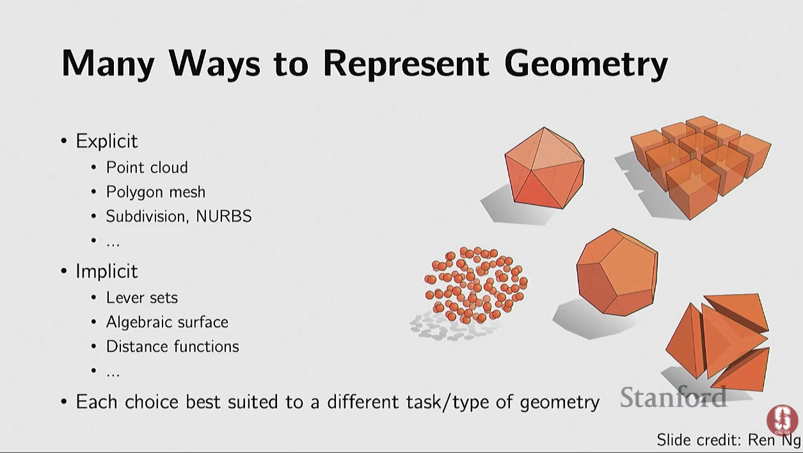

Representing, understanding, and generating 3D geometry and scenes. Unlike 2D images, 3D data comes in many representations — point clouds, meshes, voxels, and neural implicit functions — critical for robotics, autonomous driving, AR/VR, and 3D content creation.
Any 3D shape representation must address five concerns:
There are two broad families: explicit (surface directly represented) and implicit (surface defined as level-set of a function).
A set of 3D points (x, y, z) sampled from a surface with no connectivity information. Captured by depth cameras, LiDAR, and Structure-from-Motion. Requires permutation-invariant networks like PointNet.

Easy to sample points on the surface; harder to test if a point is inside or outside.
A set of 3D points (x, y, z) sampled from a surface with no connectivity information. Captured by depth cameras, LiDAR, Structure-from-Motion.
PointNet — first deep network to operate directly on point clouds. Applies shared MLP to each point independently, then global max-pooling aggregates all points into one descriptor. Achieves permutation invariance by design. Paper: PointNet
Graph Neural Networks on Point Clouds: Dynamic edge convolution builds a graph between nearby points and applies graph convolution — captures local structure better than PointNet. Paper: Dynamic Graph CNN
Vertices + edges + faces (triangles/quads). Used in 3D modeling (Blender, Maya), game engines, rendering. Operations include subdivision, simplification, and regularization.
Surfaces defined by mathematical parameters (u, v) coordinates. Examples: Bezier curves, B-splines, NURBS. A torus is defined analytically as f(u,v) = ((2 + cos u)cos v, (2 + cos u)sin v, sin u) — sampling is easy; testing inside/outside requires solving the equation.
Easy to test inside/outside; harder to sample points on the surface.
Learn a function f(x, z) → [0, 1] that outputs "is this 3D point x inside the object?" Paper: Occupancy Networks
Learn a function f(x) → ℝ that outputs the signed distance to the nearest surface (negative inside, positive outside, zero on surface). Paper: DeepSDF
3D analog of pixels: regular cubic grid. Memory scales as O(N³) — expensive at high resolution. OctNet uses an octree structure to allocate more resolution near surfaces, saving memory. Paper: OctNet
NeRF represents a 3D scene as a continuous function:
(x, y, z, θ, φ) → (RGB color, density σ)Where (x, y, z) is a 3D point and (θ, φ) is viewing direction.
Rendering: shoot camera rays into the scene → sample N points along each ray → query the network for (color, density) at each point → integrate via volume rendering to get pixel color.
Training: minimize the difference between rendered images and real training photos. NeRF memorizes a specific scene (not a general model).
Limitations: slow rendering (seconds per frame), per-scene optimization. Paper: NeRF: Representing Scenes as Neural Radiance Fields for View Synthesis
Represents a scene as a set of 3D Gaussian blobs (soft 3D pixels) instead of a neural network. Each Gaussian has position (x, y, z), size + shape (anisotropic covariance matrix), color (RGB), opacity (α), and view-dependent shading.
MLP-based implicit scene representation
Explicit Gaussian blob scene representation
Rendering: project ("splat") Gaussians onto the 2D screen → blend via GPU rasterization → real-time rendering.
Paper: 3D Gaussian Splatting for Real-Time Radiance Field Rendering
| Representation | Properties | Tradeoffs |
|---|---|---|
| Segmented Geometry | Object split into labeled parts | Simple to construct; atomic integrity not guaranteed |
| Part Sets | Unordered collection of geometry pieces | Flexible; no relationship structure |
| Relationship Graphs | Nodes = parts, edges = spatial relationships | Captures spatial constraints |
| Hierarchies | Tree structure (e.g., base → seat → legs) | Models natural parent-child structure |
| Programs | Code that generates the shape | Most expressive; hardest to get training data |
| Dataset | Content | Scale |
|---|---|---|
| Princeton Shape Benchmark | 3D CAD models in 182 categories | 1,814 models |
| ShapeNet | 3D CAD models | 55 categories |
| Objaverse | Annotated 3D objects | 800K objects |
| Objaverse-XL | 3D objects | 10M+ objects |
| ScanNet | Indoor 3D scenes (RGB-D) | ~1500 scans |
| ScanNet++ | High-fidelity indoor scenes | Detailed |